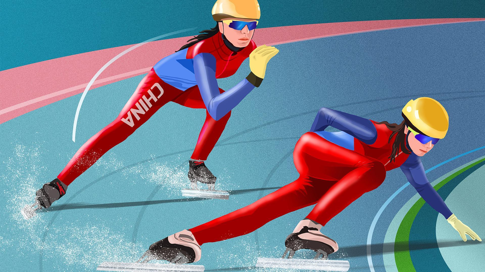
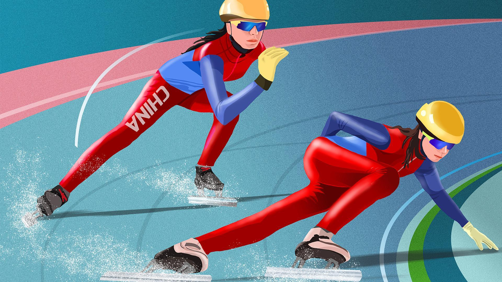
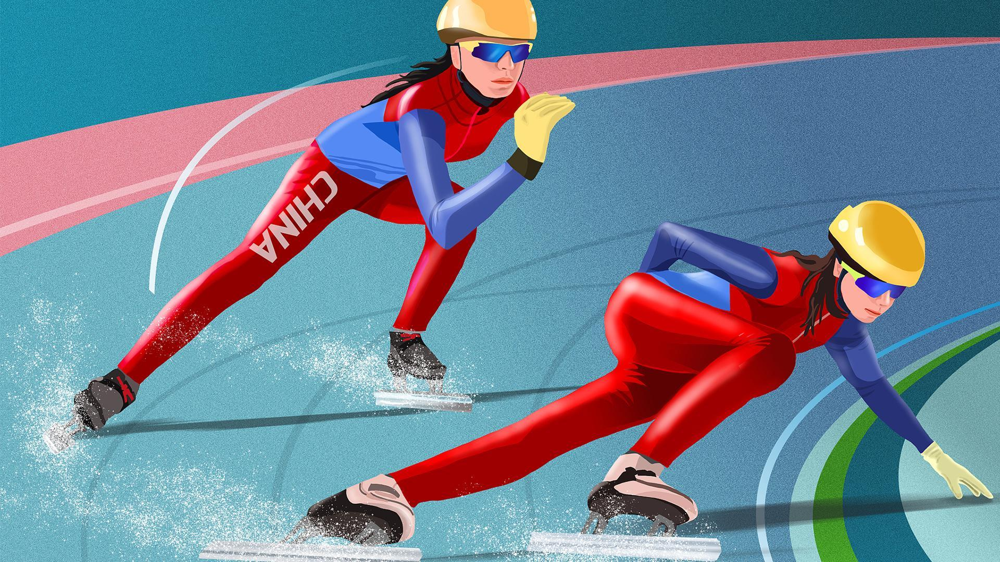

⬆

Шорт-трек (від англ. short track — коротка доріжка) — зимовий олімпійський вид спорту, змагання з бігу на ковзанах на хокейному майданчику. На відміну від бігу на ковзанах на великих ковзанках, де спортсмени виходять на дистанцію парами, в шорт-треку одночасно стартує кілька ковзанярів. Доріжка для шорт-треку овальної форми, довжиною 111,12 м. Сама ковзанка повинна мати розміри 60 на 30 м, що збігається із розмірами хокейного майданчика європейського типу.
Шорт-трек зародився із ковзанярських змагань із загальним стартом. Такий старт застосовували переважно в Сполучених Штатах та Канаді. Наприклад, на Зимових Олімпійських іграх 1932 в Лейк-Плесіді старт був загальним. Крім того в Північній Америці змагання з бігу на ковзанах часто проводилися в закритому приміщенні, наприклад, у Медісон-сквер-гарден, і саме тому доріжки були коротшими, ніж на відкритому повітрі.
Міжнародний союз ковзанярів взяв змагання на короткій дорожці під свою опіку в 1967. Перші міжнародні змагання відбулися в 1976. Перший світовий чемпіонат був проведений у 1981, хоча пізніше, заднім числом, були визнані й попередні змагання. Починаючи з 1992, шорт-трек входить до програми Олімпійських ігор. На сучасних Олімпіадах розігрується 8 комплектів нарогод: на дистанціях 500 м, 1000 м та 1500 м, як для чоловіків, так і для жінок, а також естафета на дистації 5000 м для чоловіків та 3000 м для жінок.
З часом популярність змагань на короткій доріжці перевищила популярність класичного ковзанярського спорту. У світі на змаганнях із шорт-треку домінують ковзанярі Нідерландів, Канади, Кореї та Китаю.